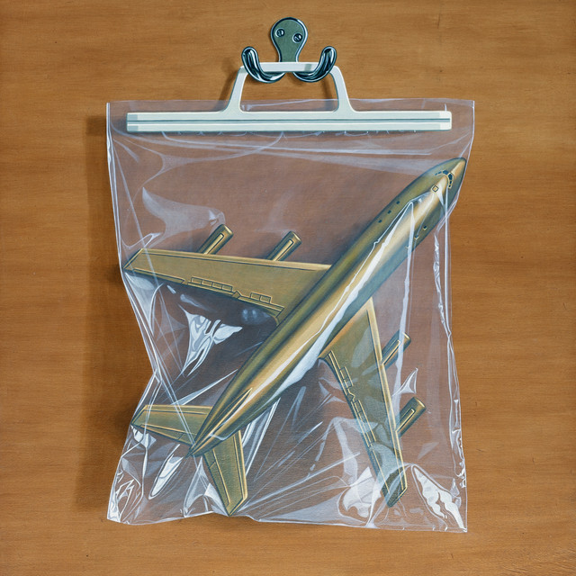
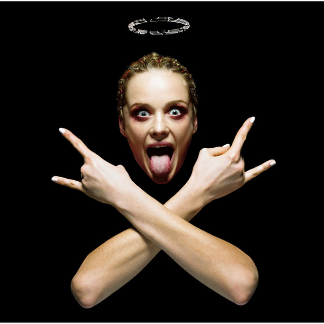
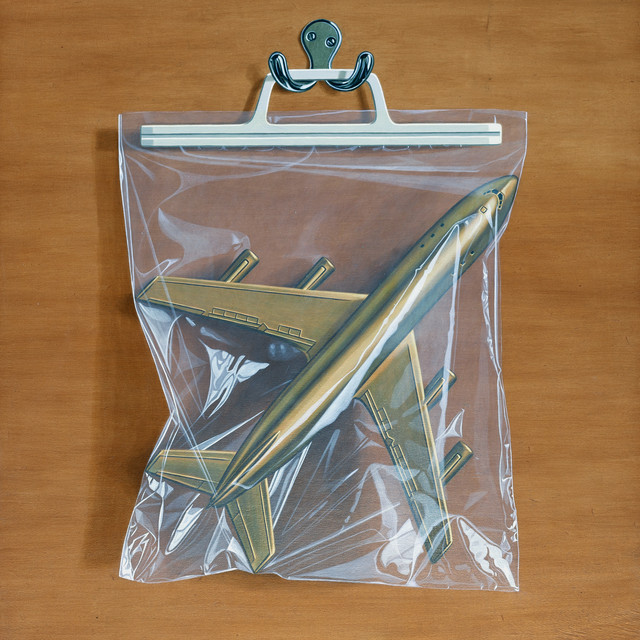
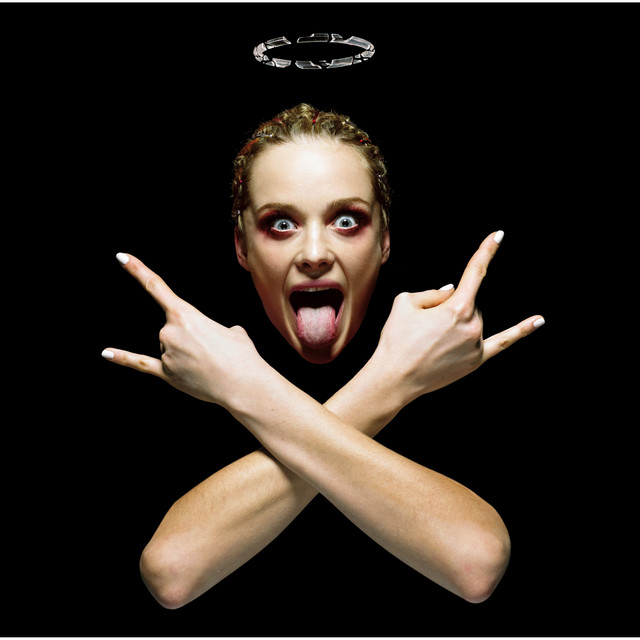

Catfish by Doechii

Chaos Space Marine by Black Country, New Road
Rock-impo Goroshi by Maximum the Hormone
Kaleb Searle is a passionate graphic designer currently studying at Louisiana State University. With a strong foundation in design principles and a keen eye for aesthetics, Kaleb specializes in creating visually compelling artwork using Adobe Illustrator, Photoshop, and InDesign. With three years of experience in art and design classes, they bring creativity, precision, and innovation to every project. Dedicated to mastering the craft, Kaleb continues to push creative boundaries while maintaining a 4.0 GPA at LSU.
Catfish by Doechii
Chaos Space Marine by Black Country, New Road
Rock-impo Goroshi by Maximum the Hormone
